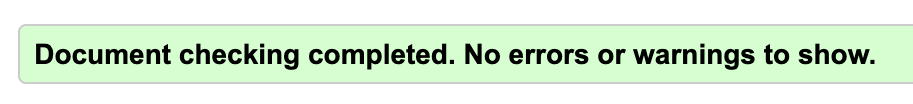

Section 1
Report page, this page displays my report on how my website met each requirement.
- 1.
- 2. The sit is published as of Halloween. https://cactusjuiceee.github.io/Phase-1/
- 3. Here is my ordered list of fulfilled requirements, as well as a page named report.
- 4. In my dropdown menu you will find 5 pages including index, that all link to each other. RIGHT NOW NO MEANING
- 5. There is a header at the top called "Welcome to The Report"
- 6. At the top of the report page there are 4 navigational buttons to internally navigate the page.
- 7. As of Halloween, at smaller sizes the image will switch with a flexbox to be a smaller image
- 8. As seen in the Validator section, there is a picture and the alt text is very descriptive.
- 9. AS OF 25TH all html and css passes Nu and WAVE.
- 10. The header uses cursive while the rest uses default font.
- 11. On page 4 there is a form that asks for a name but doesn't do anything.
- 12. There is a link in the Validator section to an external site.
- 13.
Validation
This is the Nu Validator used for the assignment.
